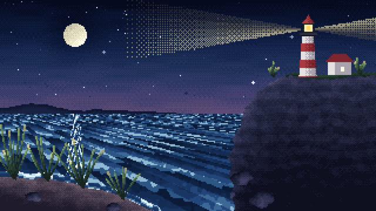
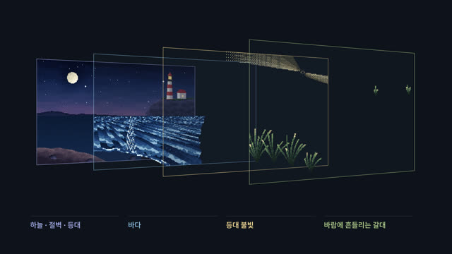
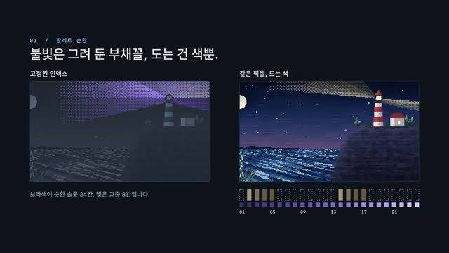
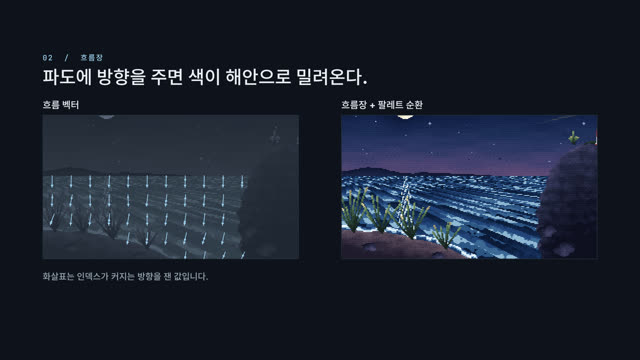
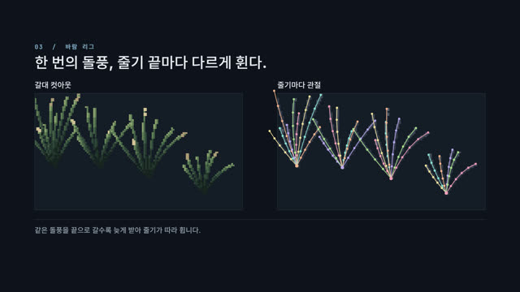
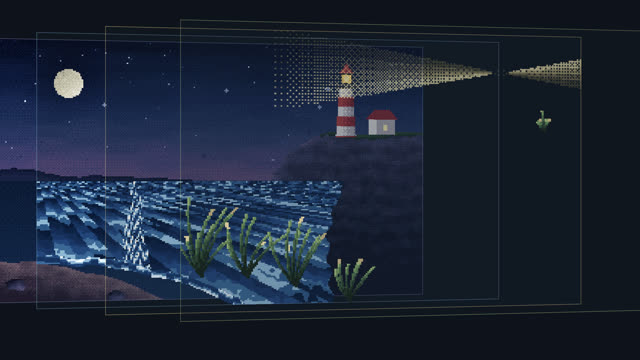

작업 흐름
- 입력
- 움직이는 것이 있는 장소 하나 (포구, 대장간, 비 오는 골목, 화산, 폭포, 네온 간판, 오로라 …)
- 브리프
- 그림(주인공 · 빛 · 깊이 · 팔레트), 레이어와 화면 이름, 움직이는 것마다 기법(순환 · 흐름 · 그리기 · 리그)과 램프 · 속도, 패널 문구
- 그림 설계
- 320×180 인덱스 픽셀아트: 램프와 순환, 디더링 그러데이션, 방향을 준 흐름장, 바람에 휘는 식물, 프레임마다 그리는 불티
- 검사
- check.mjs: 픽셀은 그대로 · 색만 바뀜 · 흐름 방향 · 리그(뼈 길이 · 뿌리 · 관절 한계 · 따라 휨) · 카메라 · 구도 · 글자 크기, 스틸 검토
- 출력
- 라이브 HTML 페이지와 1920×1080 MP4
node color-cycle-breakdown/scripts/new-film.mjs my-film --title "제목"
node color-cycle-breakdown/scripts/check.mjs my-film
node color-cycle-breakdown/scripts/render.mjs my-film --shots
node color-cycle-breakdown/scripts/render.mjs my-film # → out/my-film.mp4요구 사항: Node + Playwright Chromium (Canvas 2D, GPU 필요 없음), ffmpeg. 단계별 순서는 SKILL.md에 있습니다.
샘플
예제와 스타터의 장면 · 분해 · 패널입니다. 카드를 누르면 라이브 페이지가 그 순간에 멈춘 채 열립니다(클릭 · 스페이스로 재생).
등대 포구의 밤 새 주제로 만든 예제 · 패널 3개 · 24초
원본에 없는 주제입니다. 등대 불빛은 24칸 순환(그중 16칸은 투명)으로 돌고, 파도 · 물거품 · 달빛 물결은 흐름장으로 해안에 밀려오고, 모래언덕의 갈대는 한 번의 돌풍에 휩니다.

장면 · 1.5초살아 있는 그림불빛 · 파도 · 물거품 · 달빛 · 별이 색 순환으로 움직임

분해 · 5초레이어 판 네 장불투명한 그림이 가장 뒤, 앞쪽 판일수록 오른쪽

패널 1 · 9초불빛은 그려 둔 부채꼴고정 인덱스 · 도는 색 · 슬롯 24칸 견본(투명 칸 점선)

패널 2 · 13초파도에 방향을 준다along 함수의 기울기를 잰 화살표

패널 3 · 17초줄기 끝마다 다르게갈대 컷아웃 · 줄기마다 관절

합치기 · 20초다시 한 장으로분해와 같은 길로 돌아와 끝까지 재생
Campfire 스타터 · 패널 2개 · 20초
가장 작은 영상입니다. 불꽃은 투명 칸 두 개가 섞인 9칸 순환으로 위로 오르고, 땅의 불빛은 고리로 퍼지고, 불티는 프레임마다 그리고, 풀은 바람에 휩니다.
실제 작품
이 레포에서 만든 스킬입니다. 원본 게시물의 영상을 보고 형식을 가져와, 원본에 없는 주제로 처음부터 끝까지 만들었습니다.
링크
- SKILL.md 워크플로
- 폴더 lib · scripts · references · starter · examples
- README.md 빠른 시작
- references/BRIEF.md 브리프 틀과 스틸 검토
- references/KIT.md 팔레트 · 레이어 · 그리기 · 흐름 · 식물 · 패널
- references/LOOK.md 그림 · 색으로 만드는 움직임 · 분해 · 문구
- references/SOURCE.md 원본에서 가져온 것과 가져오지 않은 것
- references/LESSONS.md 겪은 문제와 해결